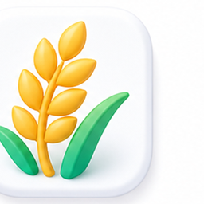

09:12
▮▮▮ Wi-Fi ▰
四会美丽乡村 · 石狗村
••• ○
首页
村务、服务与乡村动态一屏掌握
推荐
自然风光
春日农耕景象，生态美景
AI智能助手
村民问题快速解答
开始咨询
村务通知
3点村民大会
成为村民
解锁更多内容
事件上报
积分制
一件事专区
热门服务
代办服务
政策查询

农业农产
乡村动态
美丽乡村
应急通知
法制宣传
积分动态
石狗村开展美丽乡村示范活动
2025-07-23 10:00 石狗村村委会
AI助手
◆
首页
▦
村务
▦
服务
▦
我的